ЧелябинскСоветская ул., 67вход с улицы, 1 этаж
Nail's Lab №1 – студия маникюра и педикюра в центре Челябинска
Атмосфера, в которую хочется возвращаться.
Лаборатория маникюра в самом сердце города: ногти, брови, ресницы и массаж.
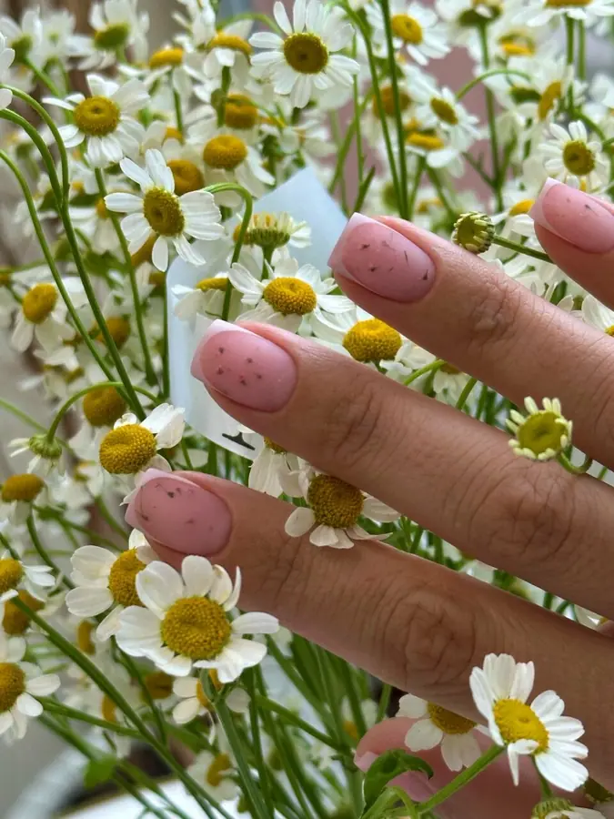
- Ежедневно 10:00–22:00
- +7 (904) 805-20-30
- Советская ул., 67
О студии
Мы верим, что красота кроется в деталях.
Поэтому в Nail's Lab №1 продумано всё – от формы ногтя до картины на стене и цветов в интерьере.
Для нас важно не просто сделать красивый маникюр или педикюр. Нам хочется, чтобы каждый ваш визит становился временем для себя – с комфортом, вниманием и заботой. Мы каждый раз придумываем что-то новое и продолжаем расти, чтобы вам здесь было уютно и красиво.
Что мы делаем
Маникюр и педикюр
Уход за ногтями и кутикулой, покрытие, укрепление, наращивание и дизайн – от нежного нюда до яркого рисунка. Делаем маникюр для взрослых и детей, отдельно – мужской маникюр и педикюр. Для рук и стоп – SPA-уход и парафинотерапия.
Брови и ресницы
Оформление и окрашивание бровей, долговременная укладка, ламинирование ресниц и уход – чтобы образ был завершённым.
Массаж
Ручной массаж и 3D LPG – когда хочется расслабиться, снять напряжение и немного перезагрузиться.
Галерея
Работы
Цвета, фактуры, оттенки неба, камней и цветов – всё это мастера переносят в работы, чтобы маникюр хотелось рассматривать.
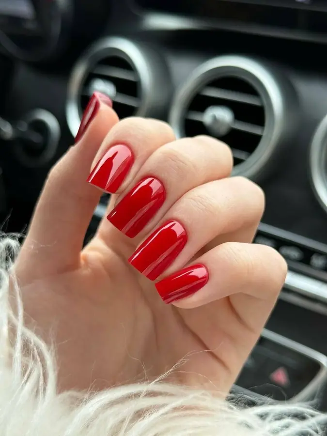
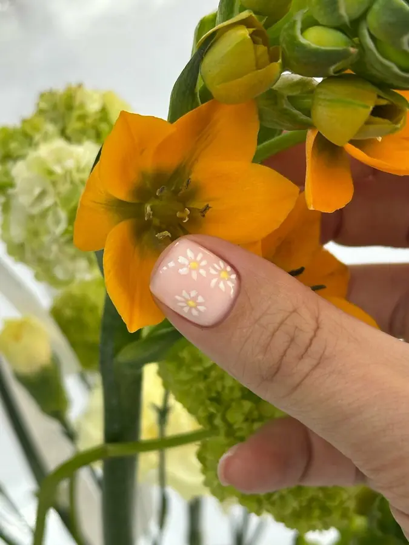
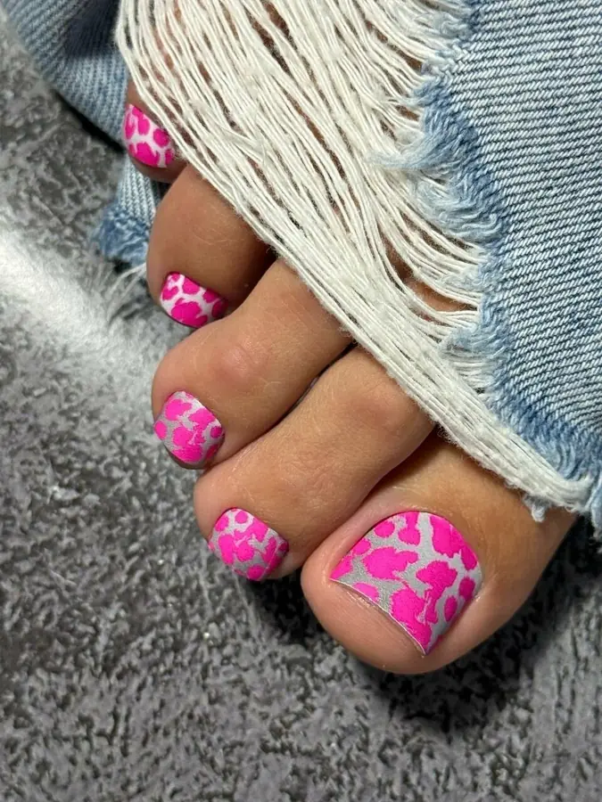
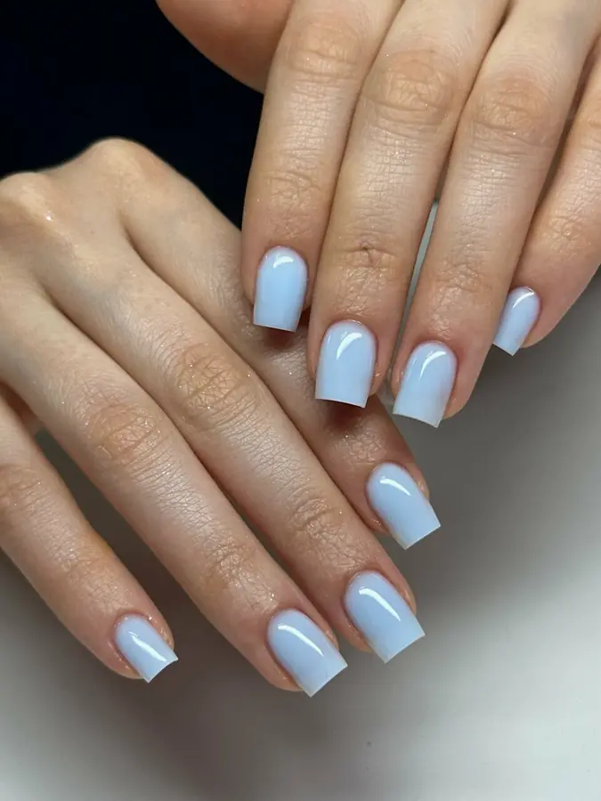
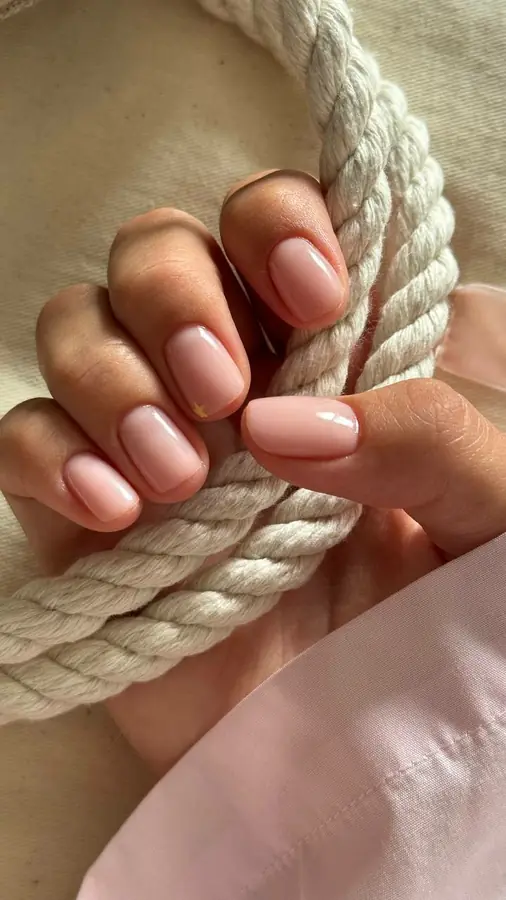
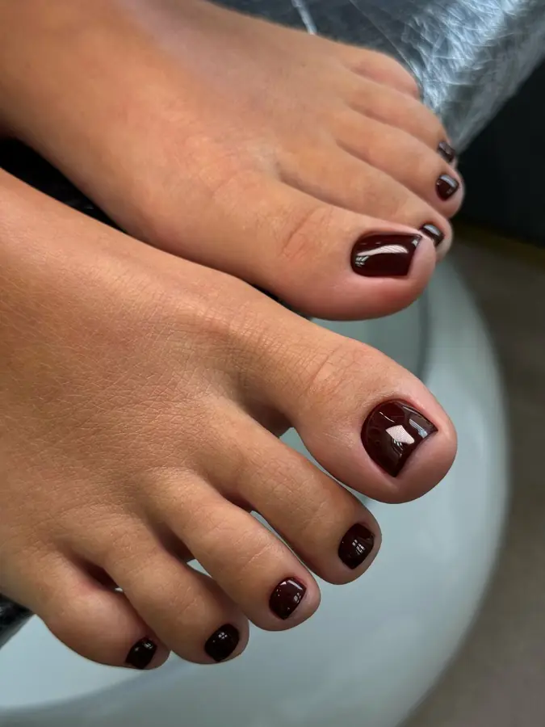
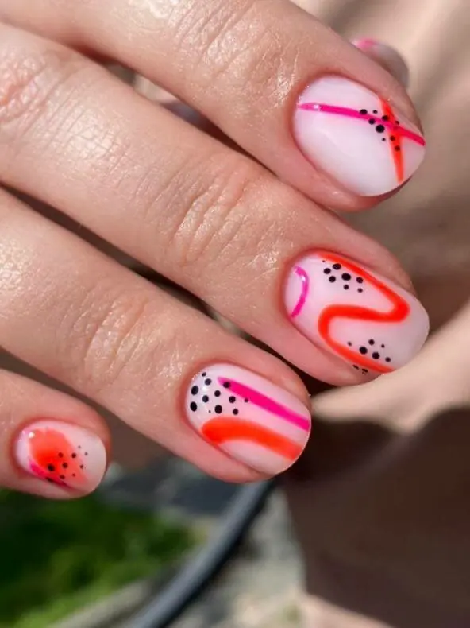
Студия
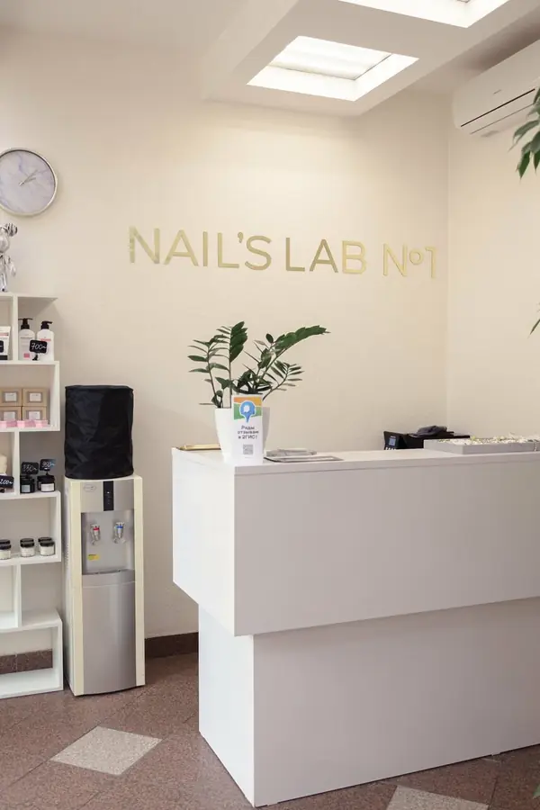
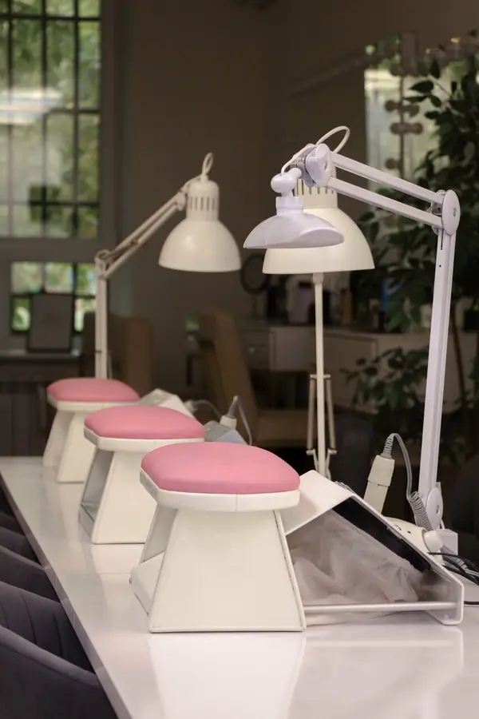
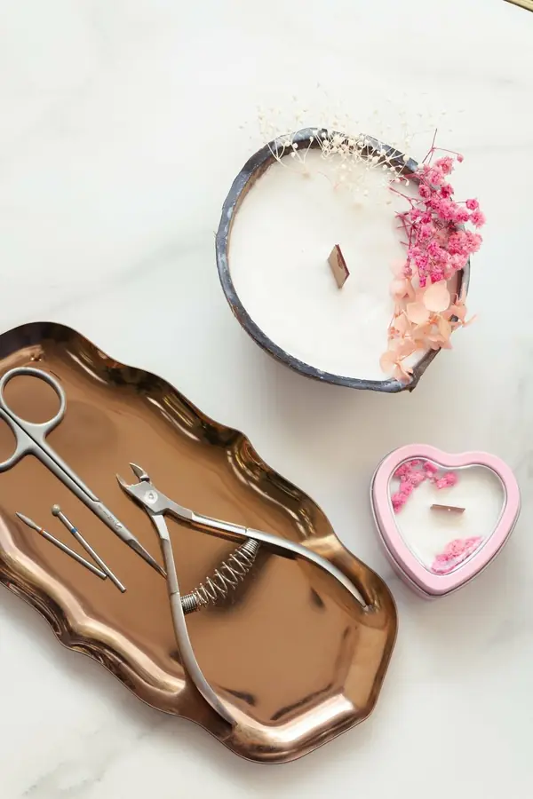
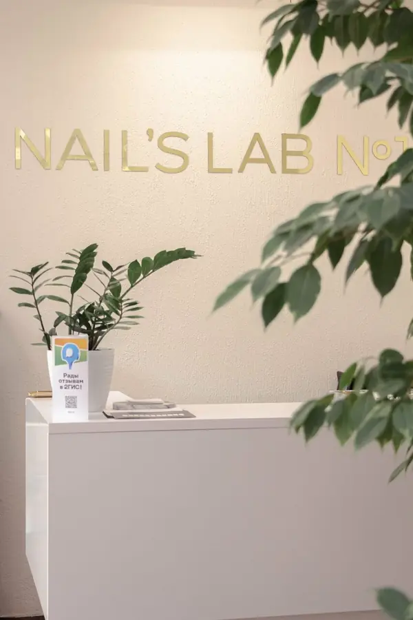
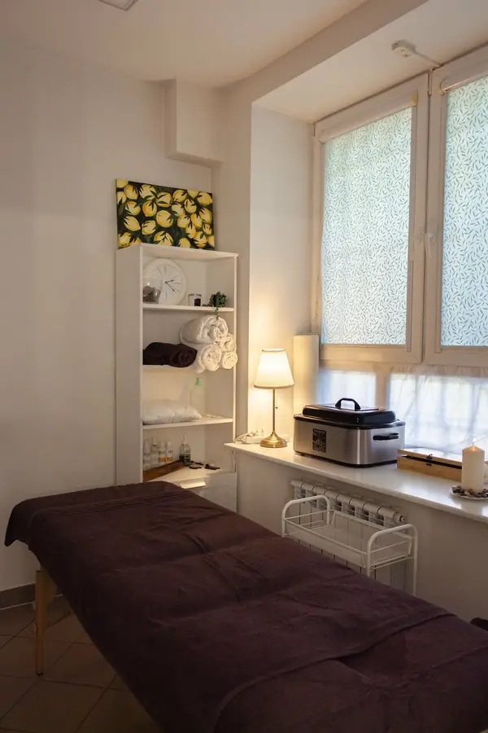
Наша команда
В студии работают мастера ногтевого сервиса и топ-мастера, мастера по бровям и массажу. Каждый внимательно слушает ваши пожелания и помогает воплотить идею – от лаконичного покрытия до сложного дизайна.
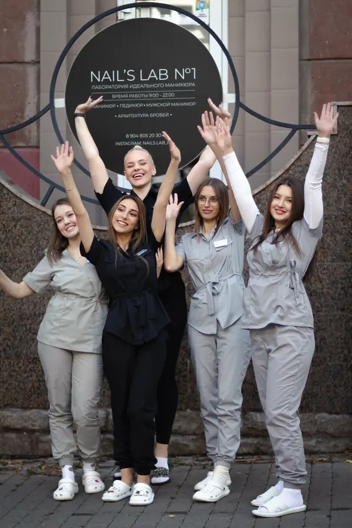
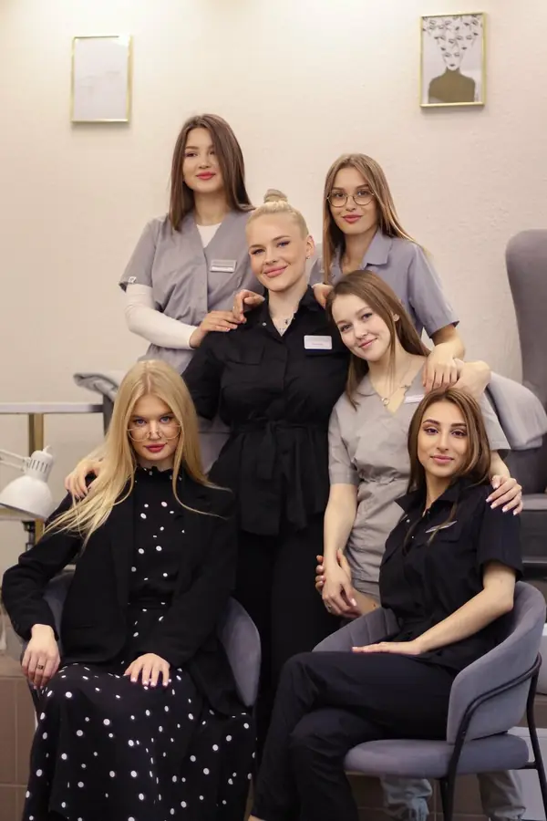
Отзывы
Салон Nail's Lab 1, хотелось бы отметить высокими оценками. Локация, оформление, очень дружелюбный персонал. Записана была на оформление бровей и ламинирование ресниц к мастеру Алисе. Качество, внимание мастера на высоте, спасибо огромное! Обязательно вернусь еще!
Мария22 мая
Любимое бьюти пространство в городе💖
Доброжелательный персонал, высокое качество услуг и профессионализм✨ каждый раз прошу девочек сделать какой-нибудь креативный маникюр и каждый раз ухожу в полном восторге😍 Рекомендую однозначно👍🏼
Алла19 мая
От студии осталось только прекрасное впечатление! В студии очень уютно, и приятно находиться! Внимание к деталям! Администратор и мастер профессионалы! Сделали качественный маникюр, учли все пожелания! Удобное расположение студии! Место, куда обязательно хочется вернуться!
Ксения27 сентября
Первый раз в этом салоне: записалась после неудачного похода к мастеру на дом. Ногти были в плачевном состоянии: 2 ногтя пришлось ремонтировать.
Огромная благодарность мастеру за бережную работу и за эту красоту :)
Еще огромный плюс (это уже мое личное наболевшее) - не было громкой музыки - фоном был выключен фильм, что очень приятно после насыщенного рабочего дня
Юлия21 мая
Как добраться
Челябинск, Центральный район, Советская ул., 67 – в самом сердце города. Вход со стороны улицы, первый этаж.
- Часы работы
- Ежедневно 10:00–22:00
- Телефон
- +7 (904) 805-20-30
Выберите мастера и удобное время онлайн или позвоните нам – подскажем, какая процедура подойдёт именно вам. Ждём вас в гости в Nail's Lab №1
Челябинск, Советская ул., 67
Открыть на Яндекс Картах